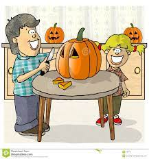

Although Halloween excitement can occur early, it's important to not buy your pumpkin too early, most pumpkins will be rotten by a week and a half.
Many venues will sell carving pumpkins as Halloween approaches. Visit your local supermarket or pumpkin patch for a good offering.
Before you start cutting, figure out what kind of design or face you want on your pumpkin a typical “spooky” face with a toothed grin can never go wrong
Use a gentle back and forth motion to cut into the pumpkin, and take your time. Make sure to cut precisely along the design that you've traced on the pumpkin's surface.
Traditionally, jack-o'-lanterns are lit with candlesticks or tea lights.If you choose to illuminate your carved pumpkin with candles, do not leave them lit overnight or if you're away from the house.